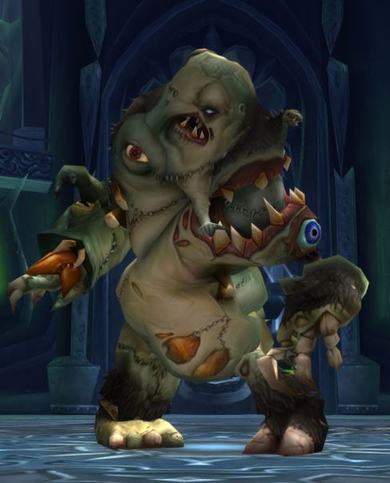

Rotface
| Rotface | |
|---|---|
|  | |
| Race | Flesh Beast (Undead)" |
| Level | ?? Boss |
| Reaction | Alliance/Horde |
| Loction | Plagueworks(Icecrown Citidel) |
| Status | Killable |
{kind=link}
Rotface " is a boss in the Plagueworks wing of the Icecrown Citadel raid. This fight requires good raid awareness, repositioning and a little bit of kiting."
-
1.
Abilities
- 1.1 Little Ooze
- 1.2 Big Ooze
- 2. Setup
- 3. Cooldowns
- 4. Slime Spary
-
5.
Mutated Infection and Oozes
- 5.1 Problems
- 5.2 Class-Specific Tactics
- 5.3 Heroic Mode
Abilities
- Ooze Flood - Inflicts 5,363 to 5,637 damage every second and reduces move speed by 25% for 5 seconds.
- Slime Spray - Raining Green Ooze. Deals 5,363 to 5,637 Nature damage to enemies in cone every second for 5 seconds.
- Mutated Infection - Inflicts 3,900 to 4,100 shadow damage every second and reduces healing received by 50% (Heroic: 75%) for 12 seconds. After the Infection is removed, a small ooze is created at the target's location.
Little Ooze
An ooze spawns when Mutated Infection is removed from a player (either by being dispelled or expiring). These merge into a Big Ooze and eventually explode.
- Sticky Ooze - Inflicts 2,925 to 3,075 damage every second and reduces move speed by 50%.
- Weak Radiating Ooze - Inflicts 3,400 to 3,600 damage to enemies every 2 seconds, and also causes the Little Ooze to merge with other nearby Ooze.
Big Ooze
These results when any two Oozes merge
- Sticky Ooze - Inflicts 2,925 to 3,075 damage every second and reduces move speed by 50%.
-
Radiating Ooze - Inflicts 4,400 to 4,600 damage to enemies every 2 seconds, and also
causes the Little Ooze to merge with other nearby Ooze.
- Unstable Ooze - Increases damage dealt by 20%. Stacks to 10. Applied each time an ooze merges with Big Ooze.
- Unstable Ooze Explosion - Inflicts 9,750 to 10,250 damage to enemies. This is caused by the Big Ooze merging with other oozes 5 times.
Setup
Editor Mode: +
test